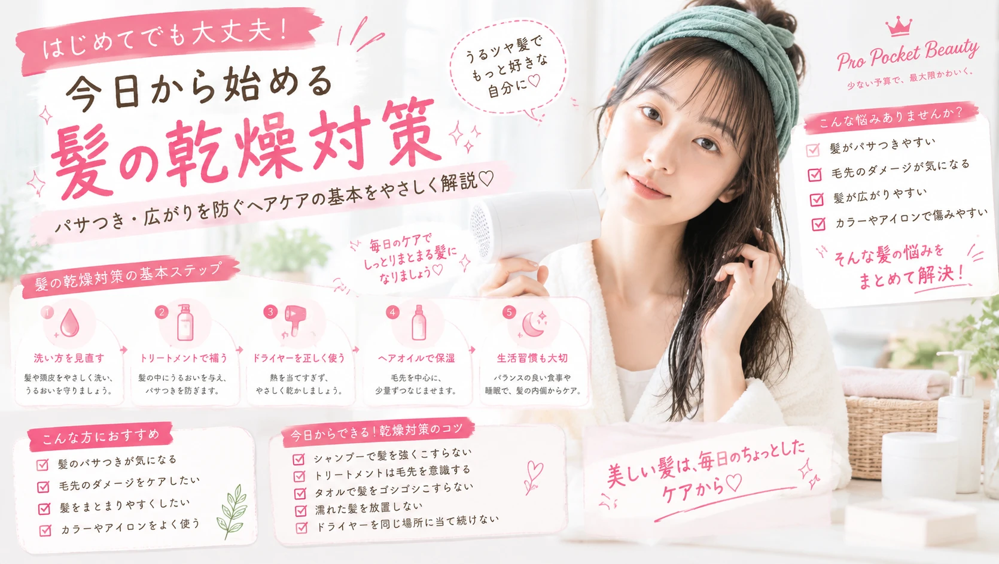

髪の乾燥対策
パサつき・広がりを防ぐ基本ガイド
「髪がパサパサする」
「毛先が広がってまとまらない」
そんな悩みを感じたら、
まずは毎日のヘアケアを見直してみましょう。
髪が乾燥するとどうなる？
髪の水分や油分が不足すると、 パサつきや広がりが気になりやすくなります。
特に、 毛先のパサつき・髪の広がり・ツヤ不足 が気になる場合は、 毎日の洗髪や乾かし方、 アウトバストリートメントなどを 一度見直してみるのがおすすめです。
髪が乾燥しやすい主な原因
洗いすぎ
洗髪方法や洗う頻度などによって、 髪や頭皮のうるおいが失われやすくなることがあります。
熱による負担
ドライヤーやヘアアイロンなどを使うときは、 熱を当て続けないように意識しましょう。
摩擦
タオルで強くこすったり、 髪を乱暴にブラッシングしたりすると、 髪への負担につながります。
まずはシャンプーを見直そう
髪の乾燥が気になるときは、 毎日使うシャンプーから見直してみましょう。
髪や頭皮を強くこすらない
シャンプーをしっかり泡立てる
すすぎ残しがないように流す
自分の髪質に合う使用感を選ぶ
トリートメントは毛先を意識
乾燥やパサつきが気になる場合は、 毛先を中心にトリートメントをなじませるのがポイントです。
水気を軽く切る
トリートメントをつける前に、 髪の水気を軽く切ります。
毛先中心になじませる
特に乾燥が気になる毛先を中心に、 髪全体へやさしくなじませます。
しっかりすすぐ
すすぎ残しがないように、 髪の状態を確認しながら流します。
ドライヤーの使い方も大切
濡れたまま放置しない
お風呂上がりはタオルで水分をやさしく取り、 ドライヤーで乾かしましょう。
同じ場所に長時間熱を当て続けないよう、 ドライヤーを動かしながら乾かすのがポイントです。
ヘアオイルも上手に取り入れよう
髪の乾燥や広がりが気になるときは、 ヘアオイルを使ったケアも選択肢のひとつです。
少量から
最初からつけすぎず、 少量ずつ髪になじませます。
毛先中心
特に乾燥しやすい毛先を中心に なじませます。
つけすぎない
量が多すぎると重く見える場合があるため、 髪の状態を見ながら調整しましょう。
今日からできる乾燥対策
- シャンプーで髪を強くこすらない
- トリートメントは毛先を意識する
- タオルで髪をゴシゴシこすらない
- 濡れた髪を放置しない
- ドライヤーを同じ場所に当て続けない
- ヘアオイルは少量から使う
乾燥が気になるときのNG習慣
こんな習慣をしていない？
× 濡れた髪を長時間そのままにする
× タオルで強くこする
× ヘアオイルを大量につける
× ヘアアイロンを同じ場所に何度も当てる
髪の乾燥対策まとめ
- まずは毎日の洗髪方法を見直す
- トリートメントは毛先を中心に使う
- 濡れた髪を放置しない
- ドライヤーは動かしながら使う
- ヘアオイルは少量から取り入れる
今日から少しずつ ヘアケアを見直そう♡
高価なアイテムをたくさん揃えなくても、 毎日のケア方法を見直すことから始められます。
ヘアケアの記事をもっと見る